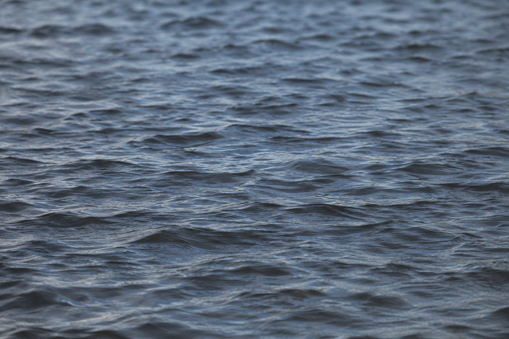
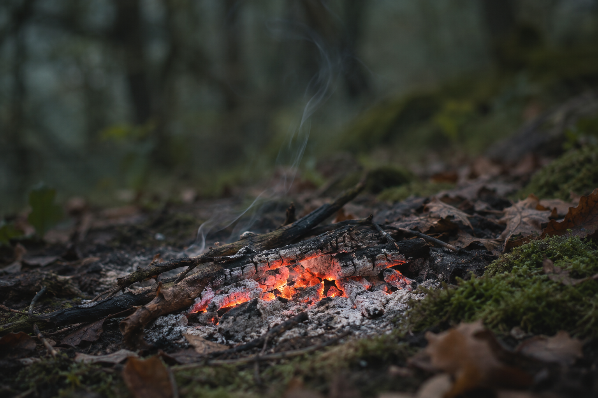
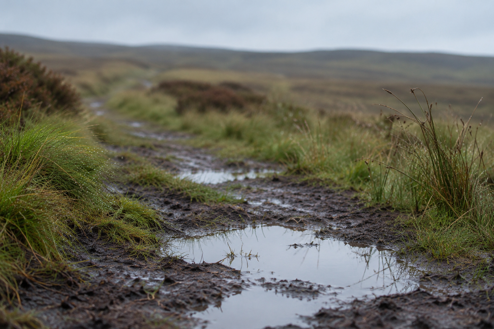
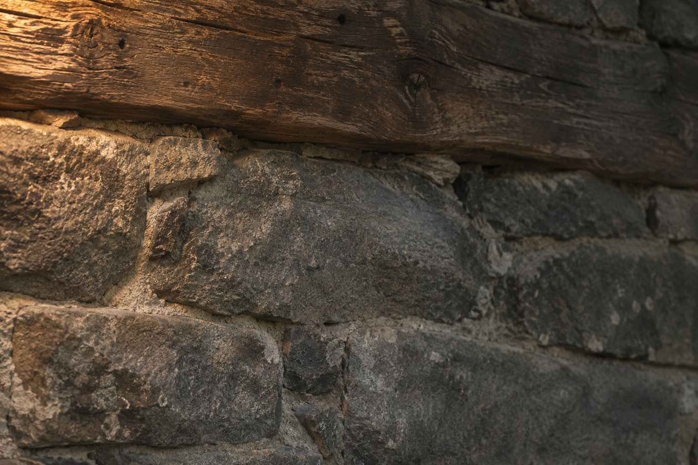
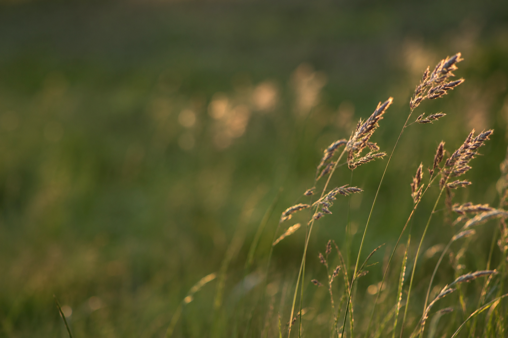

All generated with codex-images (ChatGPT image generation) on 3 November 2026. Every prompt starts with the base prompt and ends with the negative list in assets/imagery/STYLE.md; the subject line is shown here.

g07-reservoir-ripplesSlots: advice-agreement-breakWind ripples on dark reservoir water, cool sky-blue highlights, peaty troughs; surface only, no shore; bright overcast; 3:2. (Regenerated with the style-test tweak: more blue.)Pass. Now reads clearly as Water; even texture for a banner.

g10-embersSlots: activities-bushcraft-breakSmall campfire remains on a woodland floor: embers, ash, charred twigs, thin smoke, leaves and moss; low angle; dusk; 3:2. (Style-test image, kept as is.)Pass. Amber against woodland greens; no kit.

g11-mud-trackSlots: activities-plan-breakMuddy moorland track after rain, puddles reflecting pale sky, wet tussock grass and rushes, moor soft beyond; low angle; overcast; 3:2.Pass. Checked at 100%: churned mud, no footprints or tyre tracks.

g12-lamplight-stoneSlots: stay-evening-breakSoft warm lamplight across a dark grey gritstone wall meeting an old oak beam; no room, furniture or lamp; dusk; 3:2. (Regenerated with the tweak: greyer gritstone, softer light.)Pass. Stone now reads as Pennine gritstone; light is warm, not orange.

g13-grass-backlitSlots: activities-hub-quote, courses-clubs-quoteBacklit grass seed heads in an upland meadow, warm rim light, sharp heads in the right third, left and centre soft; summer evening; 3:2. (Regenerated with the tweak: clearer warm backlight.)Pass. Warmer, livelier backlight; left two-thirds soft for the quote.